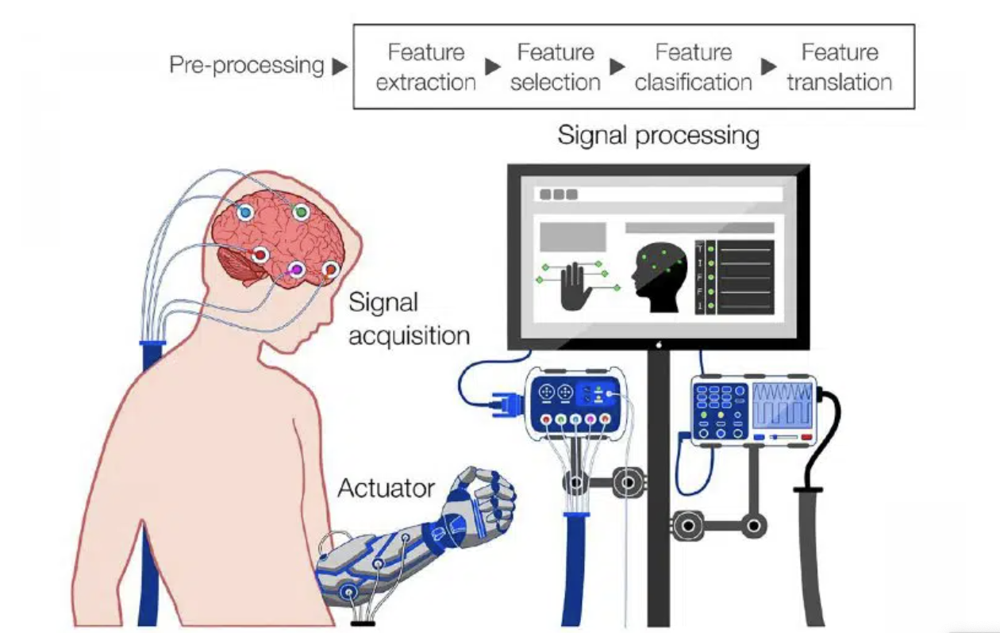

NonVaxer420 Source
NIH SPARC Program Tools & Tech: Optogenetics And Magnetogenetics (SPARC)
I.T.U. United Nations Telecommunications Union
Ian F. Akyildiz 5G-6G-7G (THE E.M.F. TERRORISTS) What The PFIZER "Lawfare" (PSYOP) People Don't Want YOU Looking At!.

Global Information Grid
Network Information transmission and processing maintained by the United States Department of Defense.
Electromagnetic Warfare Techniques
US Army initiative that integrates cyberspace operations with other capabilities like intra body communication.
Exploring biodigital convergence
What happens when biology and digital technology merge?: PH4-185/2019E-PDF - Government of Canada Publications.
Neurotechnology: The Ethical Dilemma
This video explores the ethical dilemmas surrounding neurotechnology...
Psinergy Source
Nano-Cyber Brain Machine Interface - Bleak Cyborg Future
As the availability of these platforms increases past medical treatment, disparities in access to these technologies may exacerbate existing social inequalities. For example, eBCIs can be used for cognitive enhancement and cause extreme imbalances in academic or professional successes and educational advancements. “This bleak panorama brings forth an interesting dilemma about the role of policymakers in BCI commercialization,” Green said. “Should regulatory bodies intervene to prevent misuse and unequal access to neurotech? Should society follow instead the path taken by previous innovations, such as the internet or the smartphone, which originally targeted niche markets but are now commercialized on a global scale?”
Here are more interesting links below that explore some of the scientific advancements and criticism surrounding this reality:
Learn more.Sensor Networks Wban Blockchain
Wireless Body Area Networks (WBANs) are special purpose Wireless Sensor Networks, which is used to provide competent communication solutions for health care and medicinal applications. The rapid technological advancements in the field of sensors, MEMS, and the wireless communication enable the design and implementation of Wireless Body Area Networks. The most prominent application of WBANs is in healthcare but it also finds its applications in consumer electronics, sports safety, lifestyle, defense, and much more. WBANs are usually smaller networks when compared to WSNs but still, they are vulnerable to a massive number of security attacks. In this paper, we provide an overview of the Wireless Body Area Networks (WBANs), its applications, and security aspects. Various security threats and their countermeasures in WBANs are discussed based on the latest reviews and publications.
Here are more interesting links below that explore some of the scientific advancements and criticism surrounding this reality:
Learn more.